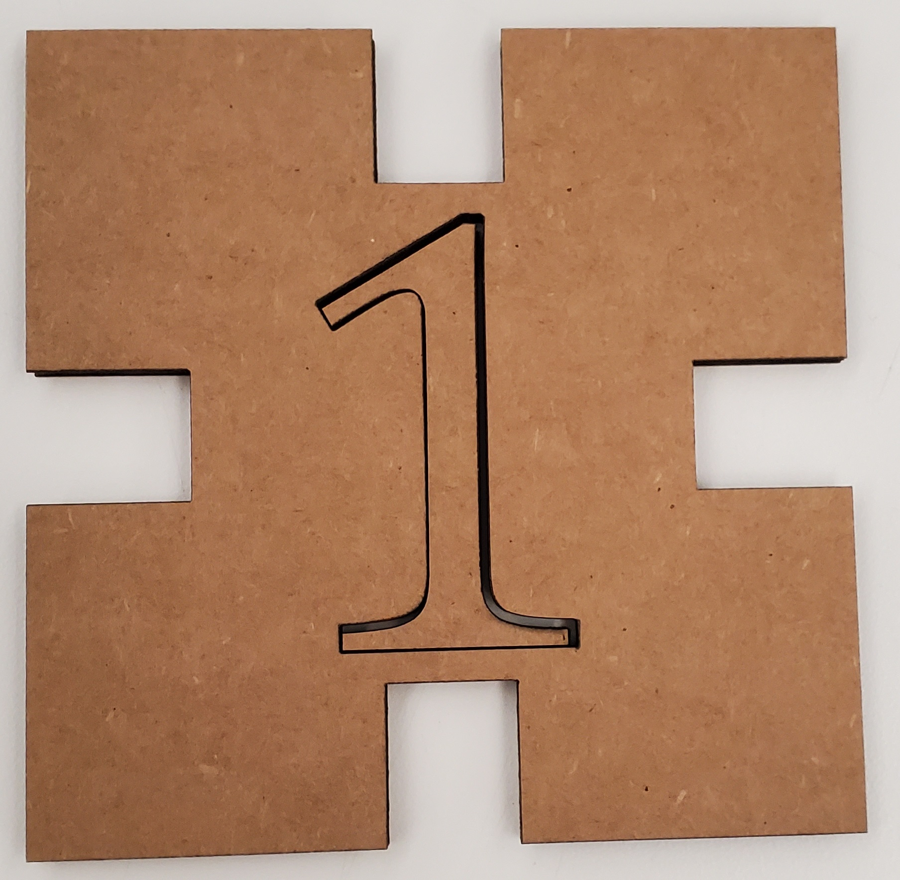

### Week 2: 2D Design and Cutting
In this week, our class learned how to operate the lab's laser cutting tool, as well as how to operate the modeling software that is Fusion 360.
Fusion 360 is a complicated piece of software that has a steep learning curve. Nevertheless, I was able to model the objects I needed to model.
I modeled and constructed a big dice block out of six laser-cut cardboard segments. I also modeled a paper towel roll and a screw to the best of my abilities.
For the dice block, I had a prototype for one piece that ended up not working, and I had sketches for how to properly construct it.
Click for the dice block:

Click for the household objects: